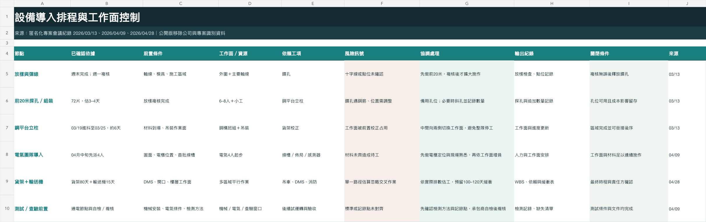
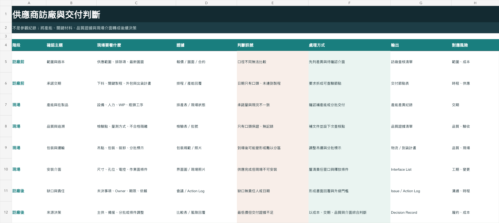
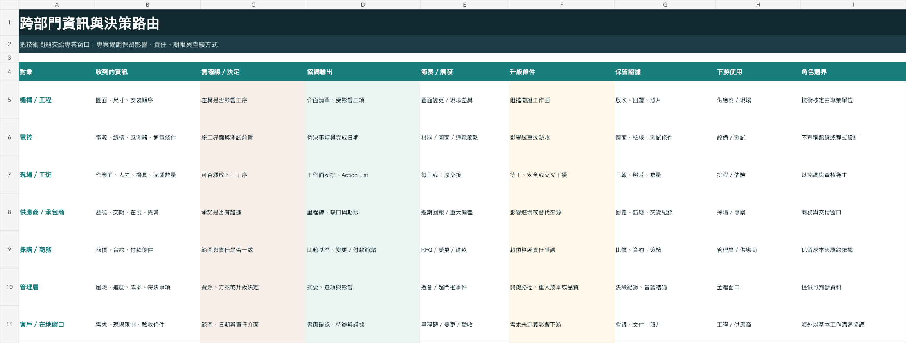
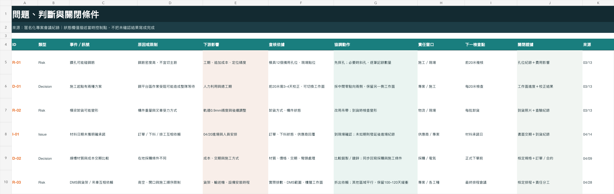
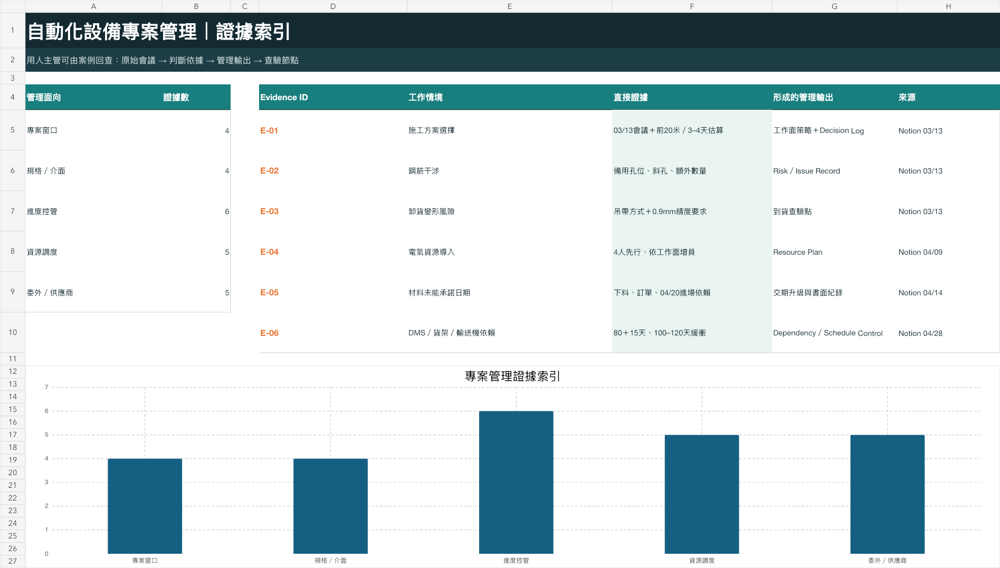

需求／圖面／報價範圍與假設來源
釐清範圍與責任介面確認包含、排除與待決事項
共同執行基準WBS、責任與變更依據
AUTOMATION PROJECT COORDINATION × EQUIPMENT DELIVERY
近8年工程與跨場域專案經驗，參與自動倉儲、輸送設備、堆垛機及鋼構工程。負責協調需求與圖面、委外供應商、專案排程、設備進場、硬體與電控介面，以及測試、驗收與結案進度。
工作方式｜先確認需求、圖面與現場條件，再把差異整理成責任窗口、完成期限與查驗方式；持續追蹤至下一個工作節點具備執行條件。
01 · PROJECT MANAGEMENT ARCHITECTURE
深色節點是我實際負責協調與追蹤的範圍，其餘節點為共同參與。我的責任是把資訊、窗口、期限與下游影響連接起來。
02 · RESPONSIBILITY MAP
不是替所有專業單位做決定，而是確認每個決定需要的資訊、負責窗口與期限，並追蹤它是否真的進入下一個工作節點。
將範圍拆成採購、製作、運輸、吊裝、安裝、測試與驗收。
確認材料、作業面、機具與人力是否支持里程碑。
整理工程、現場、供應商與客戶回覆，轉成待辦與期限。
先限制影響範圍，再確認成本、工期、驗收與付款影響。
比對合約、追加、估驗數量與實際完成範圍。
彙整進度、照片、檢查、測試與驗收文件，支持結案。
03 · CASE｜LARGE AUTOMATED WAREHOUSE
貨架、堆垛機、輸送機、鋼構吊裝與電控介面需要依序銜接。我的工作聚焦於追蹤各專業進度、介面待辦與測試前置，讓問題能交由正確窗口處理。
匿名化重建；顯示工作關係，不揭露客戶、供應商及合約資料。
04 · FRAMEWORK + EVIDENCE + ACTION + RESULT
以下內容由實際工作資料匿名化重建。排程、依存、風險與判斷紀錄，均對應我參與的專案情境與負責環節。
以下將實際使用的管理邏輯匿名化重建：里程碑與Issue對照、成本方案比較，以及合約、驗收與付款之間的關係。公司、供應商、金額及專案識別資料均已移除。


PROJECT WORK FILES
以下將實際參與的自動化倉儲、鋼構施工與專案採購經驗，依工作脈絡匿名化整理。每一份卷宗標示負責環節、判斷依據與下一個查驗節點。
貨架、堆垛機、輸送設備、吊裝作業及電控介面需依序銜接。


已確認成果｜實際施工週期26天

已確認成果｜單一專案成本改善逾NT$400萬
SOURCE → DECISION → CONTROL RECORD
節點不是為了讓甘特圖完整而補上。以下四次紀錄分別提供工期估算、人力配置、交付風險與跨工種依賴，並轉成排程、RAID、供應商訪廠與溝通矩陣。





這不是技術設計決定，而是把現場條件、時間與人力限制轉成可執行的工作面安排。
鋼平台與前20米貨架校正互相影響。
72片約3–4天；立柱進料至完成約6天。
鋼平台端較易吸收誤差；中間起點可保留兩側工作面。
每20米確認一次；遇阻時切換另一側並保留異常數量。
排程不只寫日期，同時連接人力、材料、探孔、成本與下一次複核。
EVIDENCE TRACEABILITY
依據需求文件、供應商回覆、現場紀錄與合約資料，整理專案進度、責任介面及待決事項；各項紀錄均保留來源與後續查驗方式。
ISSUE → EVIDENCE → JUDGMENT → CLOSURE
以實際工作範圍重建三類常見管理情境，呈現異常辨識、影響判斷、責任協調與查驗方式；公司、供應商及專案識別資料均已移除。
記錄差異位置、文件版本及待確認介面，建立共同檢核基準。
對照預期條件與現況，釐清涉及機構、電控、施工或供應商的責任介面。
確認差異對安裝順序、現場修改、單機測試、驗收及追加成本的影響。
將待決事項、責任窗口、回覆日期與查驗方式納入Issue／Action紀錄。
確認處理結果已反映於現場、更新文件或後續測試條件後結案。
供應商完成狀態與現場作業面、機具、人力或前置工項存在時間差。
比對製作、分批到貨、區域釋放、吊裝資源及後續安裝條件。
判斷延誤對後續安裝、測試與驗收時程的影響。
對齊材料、運輸、吊裝、安裝與作業面，更新責任窗口及完成期限。
依施工週期、現場進度與估驗資料核對實際完成範圍。
不同報價包含的範圍、材料、交付條件及排除項目存在差異。
區分已確認成本、暫估項目、替代方案及尚待釐清的介面。
除價格外，同步檢核產能、交期、品質文件及現場條件。
檢核採購範圍、整理替代方案，追蹤報價修正及商務條件確認。
成果依範圍檢核、報價基準調整、方案比較與條件協商資料核對。
DECISION CASE · CONVEYOR PROJECT
匿名化輸送機案例中，安裝已發包，電氣仍待確認；橋架、臨時用電與輔材也存在責任介面。若把已決定成本、暫估成本與替代方案混在一起，主管無法判斷專案目前的真實風險。
安裝、電氣、橋架、臨時用電、測試與驗收責任。
分開呈現已發包、暫估與替代方案，保留報價、排除項與現場條件。
更新成本資料、確認發包範圍、比較分工可行性並追蹤決策。
不利成本、待確認責任、受阻事項與下一個決策期限被清楚列出。
DELIVERY CASE · STEEL PLATFORM
範圍與前置條件
追蹤產能與批次
連接場地與機具
依作業面安排順序
記錄進度與缺失
核對完成範圍
05 · ISSUE ESCALATION FLOW
以下兩個實際案例說明，我如何從現場或文件差異，往下確認成本、品質、工期與付款影響。
協調處理先比對圖面、採購範圍與到貨內容，標記差異並通知工程與供應商；確認是否影響安裝尺寸、作業順序及驗收，再追蹤退換、修正或替代方案與完成日期。
協調處理分開確認設備是否可出貨，以及現場是否具備進場條件；若兩者不同步，協調分批交付、安裝區域與機具時段，並同步更新後續測試及驗收節點。
協調處理整理差異位置、需要決定的內容及受影響工項，交由機構、電控或供應商提出處理方式，並追蹤責任窗口、完成日期及測試前置狀態。
協調處理依合約範圍、現場完成狀態與相關紀錄檢核估驗及請款，將缺失、待補文件與完成期限列入追蹤，確認資料一致後再銜接付款與結案。
06 · OVERSEAS PROJECT PARTICIPATION
於艾立製研期間，參與泰國與馬來西亞專案，配合總經理及當地窗口確認現場進度、工作介面與待處理事項，並於返台後持續追蹤責任窗口與完成期限。
THAILAND
MALAYSIA
07 · FIELD EVIDENCE
點選照片可查看情境、負責範圍、當時控制的問題，以及這張紀錄能證明的工作能力。


WORKING METHOD